Your agents do the research. You review and accept.
Human-in-the-loop auto research on a fact graph. Ideas grow into a research map and then into running experiments, with agents working in parallel, so one person can lead a whole agent team.
Windows, macOS, Linux and Android. Free under the MIT license.All downloads
Works withClaude CodeCodexDSHOpenCodeany HTTP client
ARK Studio
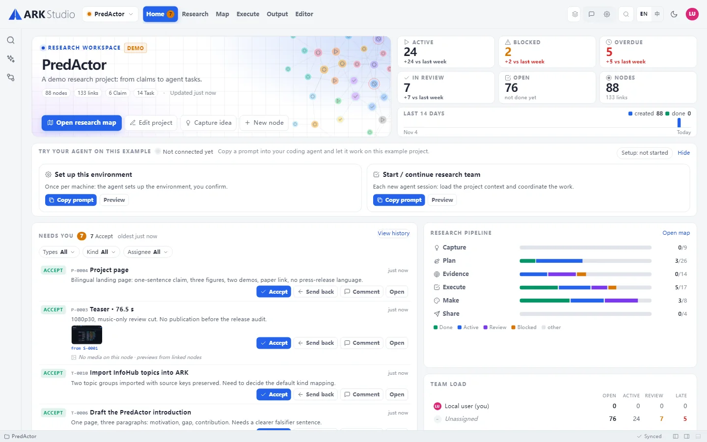
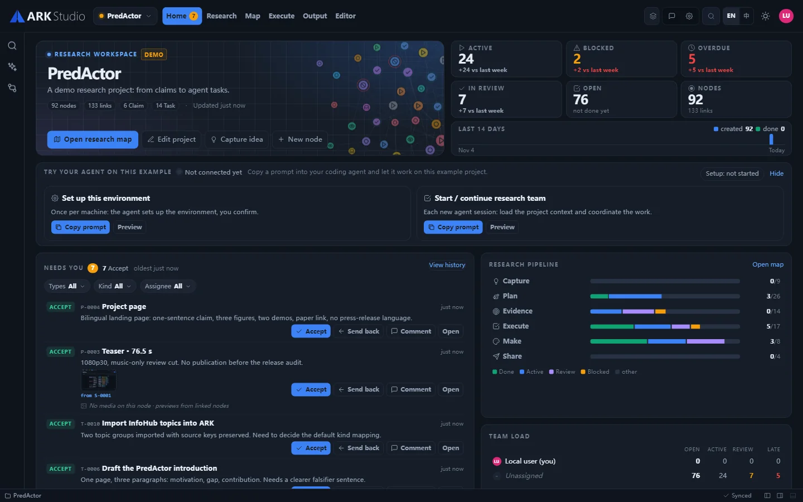
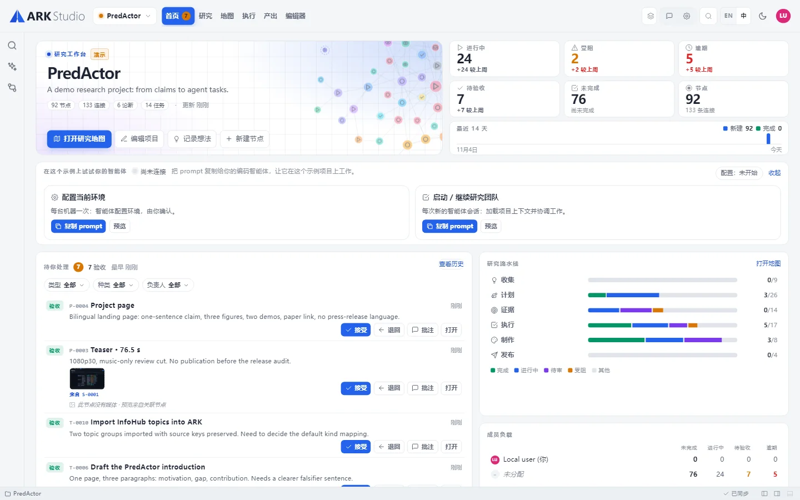
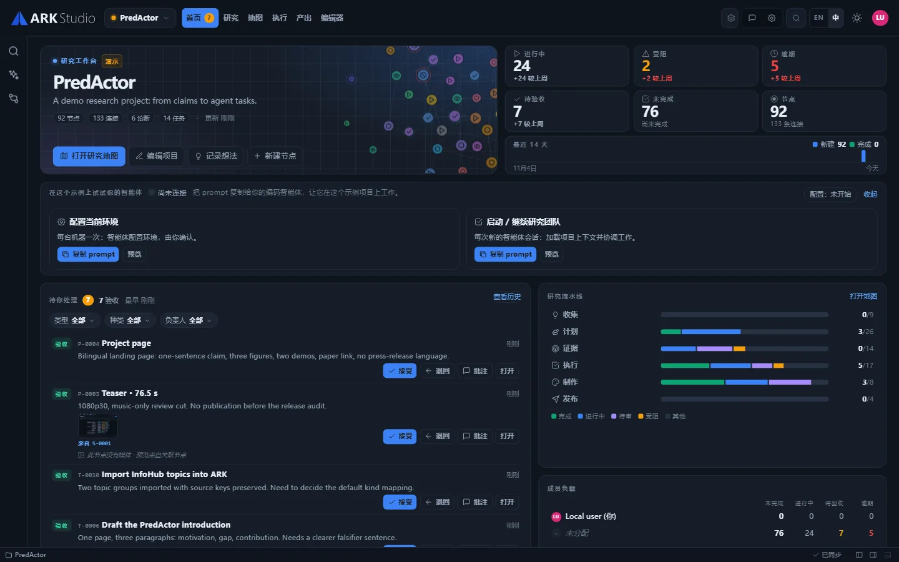
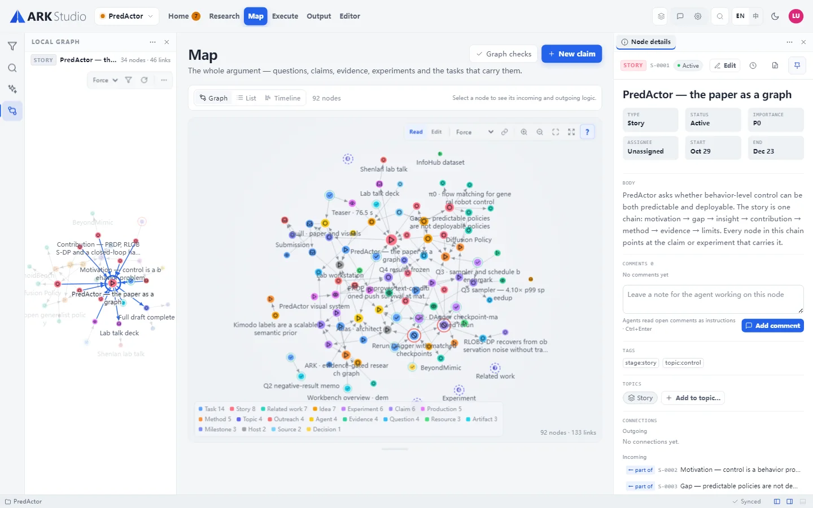
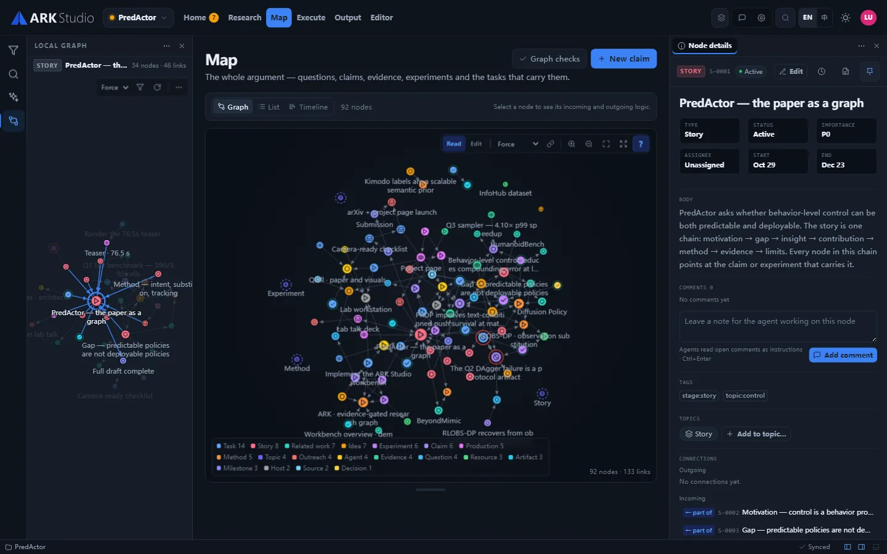
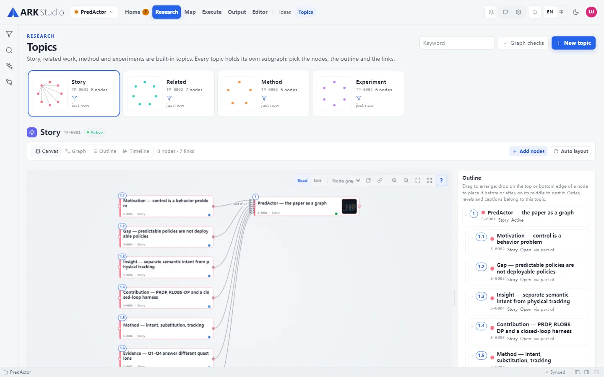
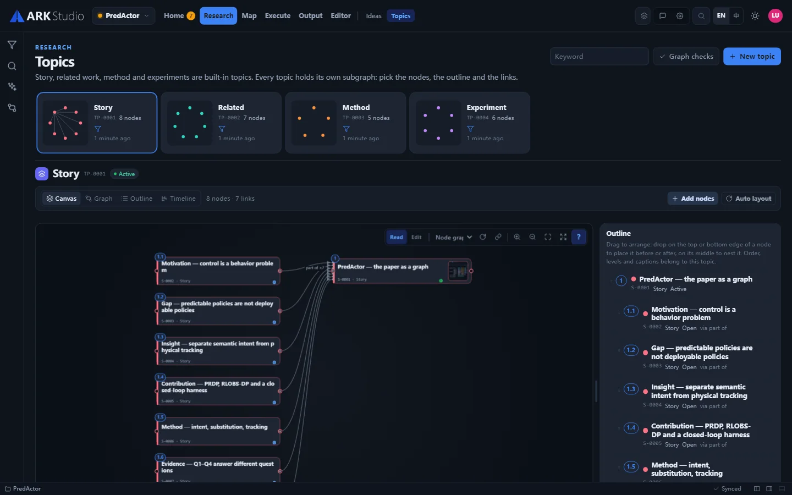
HomeResearch mapTopics
01
Auto research that grows on a fact graph
From idea to research map to implementation, agents work in parallel on a graph of claims, evidence and experiments. You stay in the loop and accept every result, so one person can lead a whole agent team.
02
Codebases, machines and GPUs in one context
Register repositories, environments, storage, workstations and GPU servers once. Every agent gets them with the project context, and the Resources graph shows what is online and who is using it.
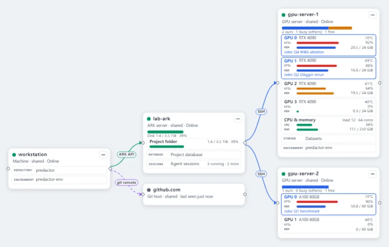
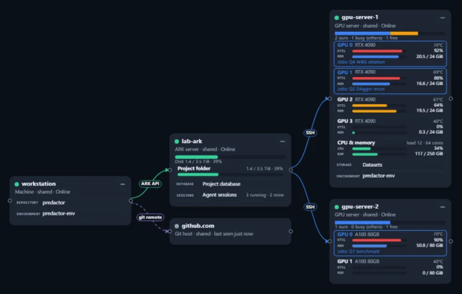
03
One project, a whole team
Several people and their agents work on the same project in parallel, with assignees, a shared board and progress on Home. Accounts, roles and project grants decide who can use what.
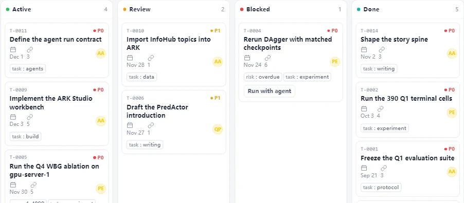
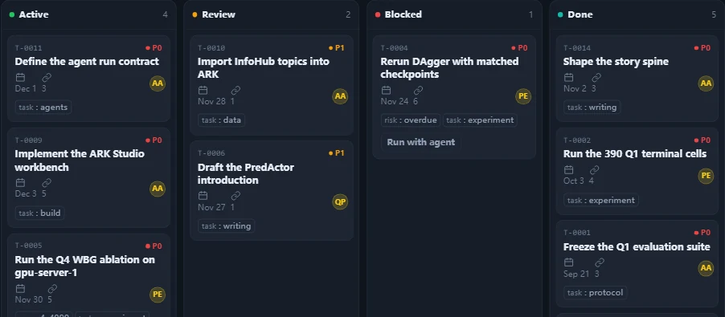
How it works
One loop from question to accepted result
The agent does the legwork and keeps the record honest. You set the direction and make the calls.
Capture
A question, an idea or a paper becomes a node. Sources come in with their provenance.
YouAgent
Plan
Before working, the agent writes its plan into a task node linked to the claim or experiment it serves.
Agent
Evidence
Literature, data and earlier results link to claims as support or contest, so gaps in the argument show.
AgentYou
Execute
Agents run in managed sessions with permission modes, worktrees and a GPU queue, with progress written to the task.
Agent
Review & accept
Results arrive as review nodes with their figures. Accept, send back or decide; each decision is kept.
You
Built for long-running agents. Home hands you two starter prompts: one sets up the environment, one starts a research team. The agent reads the project context, follows a documented working mode and asks before anything irreversible.
Features
Everything the argument needs, in one place
Graphs, outlines, boards and timelines are views of the same records, so moving from planning to execution keeps its context.
01Auto research on a fact graph
Research map
Explore and edit the whole argument as a force graph, a tree, a radial view or a Mind layout. Filters, a shared inspector and inline references open the same node wherever you are.
A topic holds a curated subgraph with its own outline and layout: the story of a paper, a related-work map or an experiment process, shown exactly as intended.
A versioned HTTP API with scoped personal tokens lets any coding agent read context, create and link nodes, attach media and report progress. Plans go in task nodes, results in review nodes, your choices in decision nodes.
Start Claude Code, Codex, DSH or OpenCode from a task. Permission modes, approvals and a worktree per session keep parallel runs apart, with transcripts and files kept on the task.
Register repositories, environments, servers and storage once per project. Agents read the same register, so a new session starts with the right checkout and data paths.
One screen answers how the project stands: pulse numbers, the research pipeline, team load, what is blocked or late, and the items that need your decision.
Windows, macOS and Ubuntu. Runs a private ARK on this computer with the bundled server and opens your ARK servers in the same window, with a tray menu.
# the Linux x64 archive from the latest release
tar -xzf ark-server-*-linux-amd64.tar.gz
cd ark-server-*-linux-amd64
./ark-server version
./ark-server serve --root ~/ark/projects # http://127.0.0.1:8890/
From source (Go 1.27+)
git clone https://github.com/MasterYip/ARK-Studio.git
cd ARK-Studio/ark_studio/server
go generate ./... && go build ./cmd/ark-server
./ark-server serve --port 8890